Documentation¶
Overview¶
Let 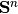 denote the set of symmetric matrices of order  , and let
and let 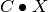 denote the standard inner product on .
, and let
and let 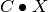 denote the standard inner product on .
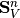 is the set of symmetric matrices of order and with sparsity pattern  , i.e., 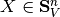 if and only if 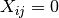 for all 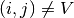. We will assume that all diagonal elements are included in . The projection
, i.e., 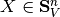 if and only if 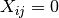 for all 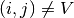. We will assume that all diagonal elements are included in . The projection  of 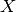 on the subspace is denoted 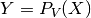, i.e., 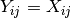 if 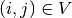 and 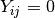 otherwise. The inequality signs 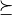 and
of 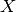 on the subspace is denoted 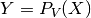, i.e., 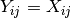 if 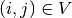 and 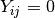 otherwise. The inequality signs 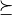 and  denote matrix inequality. We define
denote matrix inequality. We define  as the number of nonzeros in the lower triangular part of , and 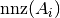 denotes the number of nonzeros in the matrix A_i.
as the number of nonzeros in the lower triangular part of , and 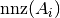 denotes the number of nonzeros in the matrix A_i.
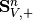 and 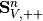 are the sets of positive semidefinite and positive definite matrices in , and similarly, 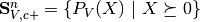 and 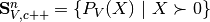 are the sets of matrices in that have a positive semidefinite completion and a positive definite completion, respectively. We denote with 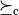 and 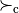 matrix inequality with respect to the cone 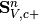.
SMCP solves a pair of primal and dual linear cone programs:
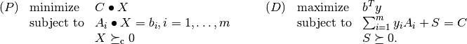
The variables are , 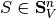, and 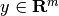, and the problem data are the matrix 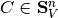, the vector 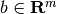, and 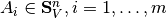.
Compositions of cones are handled implicitly by defining a block diagonal sparsity pattern .
Dense blocks and general sparse blocks correspond to standard positive semidefinite matrix constraints, diagonal blocks corresponds to linear inequality constraints, and second-order cone constraints can be embedded in an LMI with an “arrow pattern”, i.e,
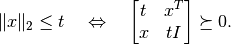
The chordal SDP solvers¶
-
smcp.solvers.chordalsolver_feas(A, b[, primalstart[, dualstart[, scaling='primal'[, kktsolver='chol']]]])¶ Solves the pair of cone programs (P) and (D) using a feasible start interior-point method. If no primal and/or dual feasible starting point is specified, the algorithm tries to find a feasible starting point based on some simple heuristics. An exception is raised if no starting point can be found. In this case a Phase I problem must be solved, or the (experimental) infeasible start interior-point method
chordalsolver_esdcan be used.The columns of the sparse matrix
Aare vectors of length and the 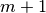 columns of
and the 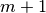 columns of Aare: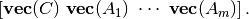
Only the rows of
Acorresponding to the lower triangular elements of the aggregate sparsity pattern are accessed.The optional argument primalstart is a dictionary with the key x which can be used to specify an initial value for the primal variable . Similarly, the optional argument dualstart must be a dictionary with keys s and y.
The optional argument scaling takes one of the values
'primal'(default) or'dual'.The optional argument kktsolver is used to specify the KKT solver. Possible values include:
'chol'(default)- solves the KKT system via a Cholesky factorization of the Schur complement
'qr'- solves the KKT system via a QR factorization
The solver returns a dictionary with the following keys:
'primal objective','dual objective'- primal objective value and dual objective value.
'primal infeasibility','dual infeasibility'- residual norms of primal and dual infeasibility.
'x','s', and'y'- primal and dual variables.
'iterations'- number of iterations.
'cputime','time'- total cputime and real time.
'gap'- duality gap.
'relative gap'- relative duality gap.
'status'has the value
'optimal'if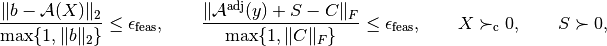
and
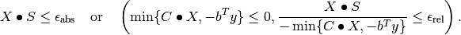
has the value
'unknown'otherwise.
The following options can be set using the dictionary
smcp.solvers.options:'delta'(default: 0.9)- a positive constant between 0 and
1; an approximate tangent direction is computed when the
Newton decrement is less than
delta. 'eta'(default:None)Noneor a positive float. If'eta'is a positive number, a step in the approximate tangent direction is taken such that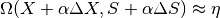
where 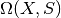 is the proximity function
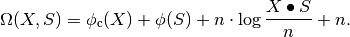
If
'eta'isNone, the step length in the approximate tangent direction is
computed as
in the approximate tangent direction is
computed as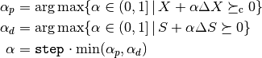
where 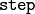 is the value of the option
'step'(default: 0.98).'prediction'(default:True)TrueorFalse. This option is effective only when'eta'isNone. If'prediction'isTrue, a step in the approximate tangent direction is never taken but only used to predict the duality gap. If'prediction'isFalse, a step in the approximate tangent direction is taken.'step'(default: 0.98)- positive float between 0 and 1.
'lifting'(default:True)TrueorFalse; determines whether or not to apply lifting before taking a step in the approximate tangent direction.'show_progress'TrueorFalse; turns the output to the screen on or off (default:True).'maxiters'- maximum number of iterations (default:
100). 'abstol'- absolute accuracy (default:
1e-6). 'reltol'- relative accuracy (default:
1e-6). 'feastol'- tolerance for feasibility conditions (default:
1e-8). 'refinement'- number of iterative refinement steps when solving KKT equations
(default:
1). 'cholmod'- use Cholmod’s AMD embedding (defaults:
False). 'dimacs'- report DIMACS error measures (default:
True).
-
smcp.solvers.chordalsolver_esd(A, b[, primalstart[, dualstart[, scaling='primal'[, kktsolver='chol']]]])¶ Solves the pair of cone programs (P) and (D) using an extended self-dual embedding. This solver is currently experimental.
The columns of the sparse matrix
Aare vectors of length and the columns of Aare:Only the rows of
Acorresponding to the lower triangular elements of the aggregate sparsity pattern are accessed.The optional argument primalstart is a dictionary with the key x which can be used to specify an initial value for the primal variable . Similarly, the optional argument dualstart must be a dictionary with keys s and y.
The optional argument scaling takes one of the values
'primal'(default) or'dual'.The optional argument kktsolver is used to specify the KKT solver. Possible values include:
'chol'(default)- solves the KKT system via a Cholesky factorization of the Schur complement
'qr'- solves the KKT system via a QR factorization
The solver returns a dictionary with the following keys:
'primal objective','dual objective'- primal objective value and dual objective value.
'primal infeasibility','dual infeasibility'- residual norms of primal and dual infeasibility.
'x','s', and'y'- primal and dual variables.
'iterations'- number of iterations.
'cputime','time'- total cputime and real time.
'gap'- duality gap.
'relative gap'- relative duality gap.
'status'has the value
'optimal'if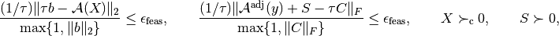
and
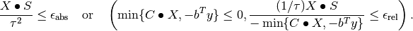
has the value
'primal infeasible'if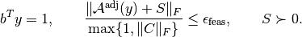
has the value
'dual infeasible'if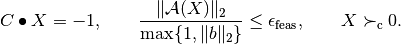
has the value
'unknown'if maximum number iterations is reached or if a numerical error is encountered.
The following options can be set using the dictionary
smcp.solvers.options:'show_progress'TrueorFalse; turns the output to the screen on or off (default:True).'maxiters'- maximum number of iterations (default:
100). 'abstol'- absolute accuracy (default:
1e-6). 'reltol'- relative accuracy (default:
1e-6). 'feastol'- tolerance for feasibility conditions (default:
1e-8). 'refinement'- number of iterative refinement steps when solving KKT equations
(default:
1). 'cholmod'- use Cholmod’s AMD embedding (defaults:
False). 'dimacs'- report DIMACS error measures (default:
True).
Solver interfaces¶
The following functions implement CVXOPT-like interfaces to the experimental solver chordalsolver_esd.
-
smcp.solvers.conelp(c, G, h[, dims[, kktsolver='chol']])¶ Interface to
chordalsolver_esd.
-
smcp.solvers.lp(c, G, h[, kktsolver='chol'])¶ Interface to
conelp; see CVXOPT documentation for more information.
-
smcp.solvers.socp(c[, Gl, hl[, Gq, hq[, kktsolver='chol']]])¶ Interface to
conelp; see CVXOPT documentation for more information.
-
smcp.solvers.sdp(c[, Gl, hl[, Gs, hs[, kktsolver='chol']]])¶ Interface to
conelp; see CVXOPT documentation for more information.
The SDP object¶
-
class
SDP(filename)¶ Class for SDP problems. Simplifies reading and writing SDP data files and includes a wrapper for
chordalsolver_esd.The constructor accepts sparse SDPA data files (extension ‘dat-s’) and data files created with the
savemethod (extension ‘pkl’). Data files compressed with Bzip2 can also be read (extensions ‘dat-s.bz2’ and ‘pkl.bz2’).-
m¶ Number of constraints.
-
n¶ Order of semidefinite variable.
-
A¶ Problem data: sparse matrix of size 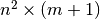 with columns 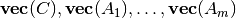. Only the lower triangular elements of
 are stored.
are stored.
-
b¶ Problems data: vector of length
 .
.
-
V¶ Sparse matrix with aggregate sparsity pattern (lower triangle).
-
nnz¶ Number of nonzero elements in lower triangle of aggregate sparsity pattern.
-
nnzs¶ Vector with number of nonzero elements in lower triangle of 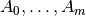.
-
nzcols¶ Vector with number of nonzero columns in 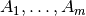.
-
issparse¶ True if the number of nonzeros is less than 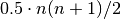, otherwise false.
-
ischordal¶ True if aggregate sparsity pattern is chordal, otherwise false.
-
get_A(i)¶ Returns the
 ‘th coeffiecient matrix
‘th coeffiecient matrix  (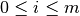) as a sparse matrix. Only lower triangular elements are stored.
(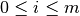) as a sparse matrix. Only lower triangular elements are stored.
-
write_sdpa([fname[, compress=False]])¶ Writes SDP data to SDPA sparse data file. The extension ‘dat-s’ is automatically added to the filename. The method is an interface to
sdpa_write.If
compressis true, the data file is compressed with Bzip2 and ‘bz2’ is appended to the filename.
-
save([fname[, compress=False]])¶ Writes SDP data to file using cPickle. The extension ‘pkl’ is automatically added to the filename.
If
compressis true, the data file is compressed with Bzip2 and ‘bz2’ is appended to the filename.
-
solve_feas([scaling='primal'[, kktsolver='chol'[, primalstart[, dualstart]]]])¶ Interface to the feasible start solver
chordalsolver_feas. Returns dictionary with solution.
-
solve_phase1([kktsolver='chol'[, M=1e5]])¶ Solves a Phase I problem to find a feasible (primal) starting point:
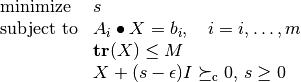
The variables are and 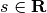, and 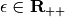 is a small constant. If
 , the method returns 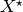 (which is a strictly feasible starting point in the original problem) and a dictionary (with information about the Phase I problem). If the method returns (None, None).
, the method returns 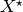 (which is a strictly feasible starting point in the original problem) and a dictionary (with information about the Phase I problem). If the method returns (None, None).
-
solve_esd([scaling='primal'[, kktsolver='chol'[, primalstart[, dualstart]]]])¶ Interface to
chordalsolver_esd. Returns dictionary with solution.
-
solve_cvxopt([primalstart[, dualstart]])¶ Interface to
cvxopt.solvers.sdp(). Returns dictionary with solution. (Note that this simple interface does not yet specify block structure properly.)
-
The following example demostrates how to load and solve a problem from an SDPA sparse data file:
>>> from smcp import SDP
>>> P = SDP('qpG11.dat-s')
>>> print P
<SDP: n=1600, m=800, nnz=3200> qpG11
>>> sol = P.solve_feas(kktsolver='chol')
>>> print sol['primal objective']
-2448.6588977
>>> print sol['dual objective']
-2448.65913565
>>> print sol['gap']
0.00023794772363
>>> print sol['relative gap']
9.71747121876e-08
Auxiliary routines¶
-
smcp.completion(X)¶ Computes the maximum determinant positive definite completion of a sparse matrix X.
Example:
>>> from smcp import mtxnorm_SDP, completion >>> P = mtxnorm_SDP(p=10,q=2,r=10) >>> sol = P.solve_feas(kktsolver='chol') >>> X = completion(sol['x'])
-
smcp.misc.ind2sub(siz, ind)¶ Converts indices to subscripts.
Parameters: - siz (integer) – matrix order
- ind (matrix) – vector with indices
Returns: matrix
Iwith row subscripts and matrixJwith column subscripts
-
smcp.misc.sub2ind(siz, I, J)¶ Converts subscripts to indices.
Parameters: - siz (integer tuple) – matrix size
- I (matrix) – row subscripts
- J (matrix) – column subscripts
Returns: matrix with indices
-
smcp.misc.sdpa_read(file_obj)¶ Reads data from sparse SDPA data file (file extension: ‘dat-s’). A description of the sparse SDPA file format can be found in the document SDPLIB/FORMAT and in the SDPA User’s Manual.
Example:
>>> f = open('qpG11.dat-s') >>> A, b, blockstruct = smcp.misc.sdpa_read(f) >>> f.close()
-
smcp.misc.sdpa_readhead(file_obj)¶ Reads header from sparse SDPA data file and returns the order
, the number of constraints , and a vector with block sizes.Example:
>>> f = open('qpG11.dat-s') >>> n, m, blockstruct = smcp.misc.sdpa_readhead(f) >>> f.close()
-
smcp.misc.sdpa_write(file_obj, A, b, blockstruct)¶ Writes SDP data to sparse SDPA file.
Example:
>>> f = open('my_data_file.dat-s','w') >>> smcp.misc.sdpa_write(f,A,b,blockstruct) >>> f.close()
Analysis routines¶
-
smcp.analysis.embed_SDP(P[, order[, cholmod]])¶ Computes chordal embedding and returns SDP object with chordal sparsity pattern.
Parameters: - P (
SDP) – SDP object with problem data - order (string) – ‘AMD’ (default) or ‘METIS’
- cholmod (boolean) – use Cholmod to compute embedding (default is false)
Returns: SDP object with chordal sparsity
Note that CVXOPT must be compiled and linked to METIS in order to use the METIS ordering.
- P (
The following routines require Matplotlib:
-
smcp.analysis.spy(P[, i[, file[, scale]]])¶ Plots aggregate sparsity pattern of SDP object
Por sparsity pattern of.Parameters: - P (
SDP) – SDP object with problem data - i (integer) – index between 0 and m
- file (string) – saves plot to file
- scale (float) – downsamples plot
- P (
Random problem generators¶
-
class
mtxnorm_SDP(p, q, r[, density[, seed]])¶ Inherits from
SDPclass.Generates random data for the matrix norm minimization problem
with the variable and where . The problem is cast as an equivalent SDP:
The sparsity of
 can optionally be chosen by specifying the parameter
can optionally be chosen by specifying the parameter densitywhich must be a float between 0 and 1 (default is 1 which corresponds to dense matrices).Example:
>>> from smcp import mtxnorm_SDP >>> P = mtxnorm_SDP(p=200,q=10,r=200) >>> print P <SDP: n=210, m=201, nnz=2210> mtxnorm_p200_q10_r200 >>> sol = P.solve_feas(kktsolver='qr')
-
class
base.band_SDP(n, m, bw[, seed])¶ Generates random SDP with band sparsity and m constraints, of order n, and with bandwidth bw (bw=0 corresponds to a diagonal, bw=1 is tridiagonal etc.). Returns
SDPobject. The optional parameter seed sets the random number generator seed.Example:
>>> from smcp import band_SDP >>> P = band_SDP(n=100,m=100,bw=2,seed=10) >>> print P <SDP: n=100, m=100, nnz=297> band_n100_m100_bw2 >>> X,p1sol = P.solve_phase1(kktsolver='qr') >>> P.solve_feas(kktsolver='qr',primalstart={'x':X}) >>> print sol['primal objective'],sol['dual objective'] 31.2212701455 31.2212398351